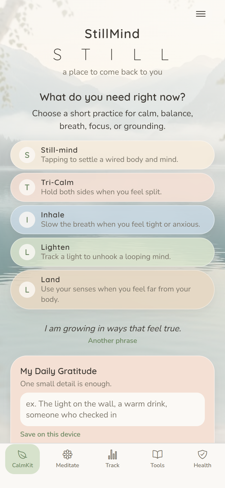

This is a readable description with pictures of StillMind. ChatGPT cannot click the live JavaScript app. It can open this page, and it can look at the screenshot image files linked below. Uploading those pictures into the ChatGPT chat is the most reliable way for it to see them.
Privacy-first mental-health calm space. Health data stays on the device. Nothing is uploaded. Not a replacement for therapy or emergency care.
Live app (browser only): https://jodilrigney.github.io/stillmind/
This overview: https://jodilrigney.github.io/stillmind/overview.html
Markdown for models: https://github.com/jodilrigney/stillmind/blob/main/public/overview.md
These are real image files, not the live app:

Also: daily affirmation, optional on-device gratitude, tabs for Track, Tools, Meditate, Health.
Lighten (/follow) is a forest firefly you follow. It is not Simple EMDR.
Simple EMDR (/emdr) opens from Lighten. One clinic-style tracking light on a dark line. Not EMDR therapy with a clinician.

Guidance on screen:
Keep the head still. Follow with the eyes only. Stop if dizzy, nauseous, or overwhelmed.
Reset tapping; Tri-Calm two-sided hold; paced breathing; grounding; Hold (name what is heavy); sleep body scan; mood/sleep tracking; CBT thought record; CPT stuck points; TIST grounding; feelings wheel; brain-health guide.
On-device storage. No health-data upload. A local “Google” label is not cloud sync of clinical data.